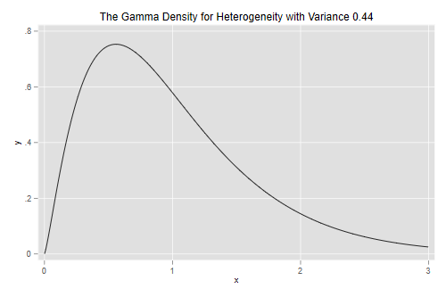

We use data from Long (1990) on the number of publications produced by Ph.D. biochemists to illustrate the application of Poisson, over-dispersed Poisson, negative binomial and zero-inflated Poisson models.
The variables in the dataset are
| Variable | Description |
|---|---|
art |
articles in last three years of Ph.D. |
fem |
coded one for females |
mar |
coded one if married |
kid5 |
number of children under age six |
phd |
prestige of Ph.D. program |
ment |
articles by mentor in last three years |
These data have also been analyzed by Long and Freese (2006), and are available from the Stata website:
. use https://www.stata-press.com/data/lf2/couart2,clear
(Academic Biochemists / S Long)
. summarize art
Variable │ Obs Mean Std. dev. Min Max
─────────────┼─────────────────────────────────────────────────────────
art │ 915 1.692896 1.926069 0 19
. di r(Var)
3.7097416
The mean number of articles is 1.69 and the variance is 3.71, a bit more than twice the mean. The data are over-dispersed, but of course we haven’t considered any covariates yet.
Let us fit the model used by Long and Freese (2006), a simple
additive model using all five predictors. We could use
poisson followed by estat gof, but I will use
glm to obtain the deviance and Pearson’s chi-squared
immediately.
. glm art fem mar kid5 phd ment, family(poisson) nolog
Generalized linear models Number of obs = 915
Optimization : ML Residual df = 909
Scale parameter = 1
Deviance = 1634.370984 (1/df) Deviance = 1.797988
Pearson = 1662.54655 (1/df) Pearson = 1.828984
Variance function: V(u) = u [Poisson]
Link function : g(u) = ln(u) [Log]
AIC = 3.621981
Log likelihood = -1651.056316 BIC = -4564.031
─────────────┬────────────────────────────────────────────────────────────────
│ OIM
art │ Coefficient std. err. z P>|z| [95% conf. interval]
─────────────┼────────────────────────────────────────────────────────────────
fem │ -.2245942 .0546138 -4.11 0.000 -.3316352 -.1175532
mar │ .1552434 .0613747 2.53 0.011 .0349512 .2755356
kid5 │ -.1848827 .0401272 -4.61 0.000 -.2635305 -.1062349
phd │ .0128226 .0263972 0.49 0.627 -.038915 .0645601
ment │ .0255427 .0020061 12.73 0.000 .0216109 .0294746
_cons │ .3046168 .1029822 2.96 0.003 .1027755 .5064581
─────────────┴────────────────────────────────────────────────────────────────
. estimates store poisson
We see that the model obviously doesn’t fit the data. The five-percent critical value for a chi-squared with 909 d.f. is
. di invchi2tail(909, 0.05) 980.25178
and the deviance and Pearson’s chi-squared are both in the 1600s.
We now assume that the variance is proportional rather than equal to the mean, and estimate the scale parameter ϕ dividing Pearson’s chi-squared by its d.f.:
. scalar phi = e(deviance_p)/e(df) . di phi, sqrt(phi) 1.8289841 1.3523994
We see that the variance is about 83% larger than the mean. This means that we should adjust the standard errors multiplying by 1.35, the square root of 1.83.
The glm command can do this for us via the
scale() option, which takes as argument a numeric value, or
simply x2 to use Pearson’s chi-squared
. glm art fem mar kid5 phd ment, family(poisson) scale(x2) nolog
Generalized linear models Number of obs = 915
Optimization : ML Residual df = 909
Scale parameter = 1
Deviance = 1634.370984 (1/df) Deviance = 1.797988
Pearson = 1662.54655 (1/df) Pearson = 1.828984
Variance function: V(u) = u [Poisson]
Link function : g(u) = ln(u) [Log]
AIC = 3.621981
Log likelihood = -1651.056316 BIC = -4564.031
─────────────┬────────────────────────────────────────────────────────────────
│ OIM
art │ Coefficient std. err. z P>|z| [95% conf. interval]
─────────────┼────────────────────────────────────────────────────────────────
fem │ -.2245942 .0738596 -3.04 0.002 -.3693564 -.079832
mar │ .1552434 .0830031 1.87 0.061 -.0074397 .3179265
kid5 │ -.1848827 .054268 -3.41 0.001 -.291246 -.0785194
phd │ .0128226 .0356995 0.36 0.719 -.0571472 .0827924
ment │ .0255427 .002713 9.41 0.000 .0202253 .0308602
_cons │ .3046168 .139273 2.19 0.029 .0316468 .5775869
─────────────┴────────────────────────────────────────────────────────────────
(Standard errors scaled using square root of Pearson X2-based dispersion.)
. estimates store overdisp
The estimates are exactly the same as before, but the standard errors are about 35% larger. We have essentially attributed all lack of fit to pure error.
An alternative approach is to fit a Poisson model and use the robust
or sandwich estimator of the standard errors. This usually gives results
very similar to the over-dispersed Poisson model. In Stata use
poisson with the robust option.
We now fit a negative binomial model with the same predictors.
. nbreg art fem mar kid5 phd ment, nolog
Negative binomial regression Number of obs = 915
LR chi2(5) = 97.96
Dispersion: mean Prob > chi2 = 0.0000
Log likelihood = -1560.9583 Pseudo R2 = 0.0304
─────────────┬────────────────────────────────────────────────────────────────
art │ Coefficient Std. err. z P>|z| [95% conf. interval]
─────────────┼────────────────────────────────────────────────────────────────
fem │ -.2164184 .0726724 -2.98 0.003 -.3588537 -.0739832
mar │ .1504895 .0821063 1.83 0.067 -.0104359 .3114148
kid5 │ -.1764152 .0530598 -3.32 0.001 -.2804105 -.07242
phd │ .0152712 .0360396 0.42 0.672 -.0553652 .0859075
ment │ .0290823 .0034701 8.38 0.000 .0222811 .0358836
_cons │ .256144 .1385604 1.85 0.065 -.0154294 .5277174
─────────────┼────────────────────────────────────────────────────────────────
/lnalpha │ -.8173044 .1199372 -1.052377 -.5822318
─────────────┼────────────────────────────────────────────────────────────────
alpha │ .4416205 .0529667 .3491069 .5586502
─────────────┴────────────────────────────────────────────────────────────────
LR test of alpha=0: chibar2(01) = 180.20 Prob >= chibar2 = 0.000
. estimates store nbreg
. scalar sigma2 = e(alpha)
Stata’s alpha is the variance of the random effect, and
corresponds to σ2 in the notes. The estimate corresponds to
an estimated variance of 0.44 and is highly significant.
To test the significance of this parameter you may think of computing twice the difference in log-likelihoods between this model and the Poisson model, 180.2, and treating it as a chi-squared with one d.f. The usual asymptotics do not apply, however, because the null hypothesis is on a boundary of the parameter space.
There is some work showing that a better approximation is to treat the statistic as as 50:50 mixture of zero and a chi-squared with one d.f. Alternatively, treating the statistic as a chi-squared with one d.f. gives a conservative test. Either way, we have overwhelming evidence of overdispersion.
For testing hypotheses about the regression coefficients we can use either Wald tests or likelihood ratio tests, which are possible because we have made full distributional assumptions.
Let us draw the density of the parameter representing unobserved
heterogeneity. Stata has a function gammaden(a, b, g, x) to
compute the density of a gamma distribution with shape a,
scale b and location shift g. In particular,
when the random effect has variance v the density is
gammaden(1/v, v, 0, x).
. scalar v = e(alpha) . twoway function y=gammaden(1/v, v, 0, x), range(0 3) /// > title(The Gamma Density for Heterogeneity with Variance 0.44) . graph export gamden.png, width(500) replace file gamden.png saved as PNG format

We can also compute quantiles using Mata. The function
invgamma(a,p) computes quantiles of the standard gamma with
shape a, which has scale 1 and shift 0. In our case the
shape is 1/v and because the scale is v we
need to multiply the quantiles by v.
. mata: v = st_numscalar("v")
. mata: invgammap(1/v, (1..3)/4) * v
1 2 3
┌───────────────────────────────────────────┐
1 │ .5114167237 .8572696907 1.334765048 │
└───────────────────────────────────────────┘
Biochemists at Q1 of the distribution of unobserved heterogeneity publish 49% fewer papers than expected from their observed characteristics, while those at the median publish 14% fewer and those at Q3 publish 33% more than expected.
Let us compare parameter estimates and standard errors under the Poisson, over-dispersed Poisson and negative binomial models:
. //v<17 estimates table poisson overdisp nbreg, b(%7.4f) se(%7.4f)
. quietly etable, estimates(poisson overdisp nbreg)
. collect stars clear
. collect addtags group[Coefficient], fortags(result[_r_b]#cmdset)
(20 items changed in collection ETable)
. collect addtags group[Std Error], fortags(result[_r_se]#cmdset)
(20 items changed in collection ETable)
. collect label levels cmdset 1 "Poisson" 2 "Overdisp." 3 "Neg.Bin.", modify
. quietly collect layout (colname) (group#result[_r_b _r_se]#cmdset)
. collect preview
─────────────────────────────────────────────────────────────────────────────────────
Coefficient Std Error
Poisson Overdisp. Neg.Bin. Poisson Overdisp. Neg.Bin.
─────────────────────────────────────────────────────────────────────────────────────
Gender: 1=female 0=male -0.225 -0.225 -0.216 0.055 0.074 0.073
Married: 1=yes 0=no 0.155 0.155 0.150 0.061 0.083 0.082
Number of children < 6 -0.185 -0.185 -0.176 0.040 0.054 0.053
PhD prestige 0.013 0.013 0.015 0.026 0.036 0.036
Article by mentor in last 3 yrs 0.026 0.026 0.029 0.002 0.003 0.003
lnalpha -0.817 0.120
alpha 0.442 0.053
Intercept 0.305 0.305 0.256 0.103 0.139 0.139
─────────────────────────────────────────────────────────────────────────────────────
The negative binomial estimates are not very different from those based on the Poisson model, and both sets would led to the same conclusions.
Looking at the standard errors, we see that both approaches to over-dispersion lead to very similar estimated standard errors, and that ordinary Poisson regression underestimates the standard errors.
We can assess the goodness of fit of the negative binomial model by
feeding the estimate of the variance into glm, which can
fit these models for a fixed value of the variance
parameter.
. local v = e(alpha)
. glm art fem mar kid5 phd ment, family(nb `v') nolog
Generalized linear models Number of obs = 915
Optimization : ML Residual df = 909
Scale parameter = 1
Deviance = 1004.2815 (1/df) Deviance = 1.10482
Pearson = 944.5494622 (1/df) Pearson = 1.039108
Variance function: V(u) = u+(.4416)u^2 [Neg. Binomial]
Link function : g(u) = ln(u) [Log]
AIC = 3.425046
Log likelihood = -1560.958338 BIC = -5194.12
─────────────┬────────────────────────────────────────────────────────────────
│ OIM
art │ Coefficient std. err. z P>|z| [95% conf. interval]
─────────────┼────────────────────────────────────────────────────────────────
fem │ -.2164184 .0726706 -2.98 0.003 -.3588501 -.0739867
mar │ .1504895 .0821062 1.83 0.067 -.0104358 .3114147
kid5 │ -.1764152 .0530587 -3.32 0.001 -.2804084 -.0724221
phd │ .0152712 .0360382 0.42 0.672 -.0553624 .0859047
ment │ .0290823 .0034657 8.39 0.000 .0222896 .0358751
_cons │ .256144 .1385256 1.85 0.064 -.0153613 .5276493
─────────────┴────────────────────────────────────────────────────────────────
The negative binomial model fits better than the Poisson, but still has a deviance above the five percent critical value of 980.25.
The over-dispersed Poisson and negative binomial models have different variance functions. One way to check which one may be more appropriate is to create groups based on the linear predictor, compute the mean and variance for each group, and finally plot the mean-variance relationship.
Here are groups based on the negative binomial linear predictor,
created using egen with the cut() subcommand
and the group() option to produce twenty groups of
approximately equal size.
. predict xb, xb . egen group = cut(xb), group(20)
Now we collapse to a dataset of means and standard deviations
(collapse’ does not do variances, but we can always square
the standard deviation). We also compute the over-dispersed Poisson and
negative binomial variance functions and plot everything
. preserve
. collapse (mean) art (sd) sart=art, by(group)
. gen vart = sart^2
. gen v_p = art * phi
. gen v_nb = art*(1+art*sigma2)
. twoway (scatter vart art) (line v_p art, lp(dash)) ///
> (mspline v_nb art, bands(10) ) ///
> , xtitle(Mean) ytitle(Variance) title("Mean-Variance Relationship") ///
> subtitle("Articles Published by Ph.D. Biochemists") ///
> legend( order(2 "Poisson" 3 "Neg.Bin.") ring(0) pos(5) cols(1))
. graph export c4afig1.png, width(500) replace
file c4afig1.png saved as PNG format
. restore
The graph plots the mean versus the variance and overlays the curves corresponding to the over-dispersed Poisson model, where the variance is ϕμ, and the negative binomial model, where the variance is μ(1+μσ2).
The Poisson variance function does a pretty good job for the bulk of the data, but fails to capture the high variances of the most productive scholars. The negative binomial variance function is not too different but, being a quadratic, can rise faster and does a better job at the high end. We conclude that the negative binomial model provides a better description of the data than the over-dispersed Poisson model.
A frequent occurrence with count data is an excess of zeroes compared to what’s expected under a Poisson model. This is actually a problem with our data:
. gen zobs = art == 0
. estimates restore poisson
(results poisson are active now)
. predict mup
(option mu assumed; predicted mean art)
. gen zpoi = exp(-mu)
. sum zobs zpoi
Variable │ Obs Mean Std. dev. Min Max
─────────────┼─────────────────────────────────────────────────────────
zobs │ 915 .3005464 .4587464 0 1
zpoi │ 915 .2092071 .0794247 .0000659 .4113403
We see that 30.0% of the scientists in the sample published no articles in the last three years of their Ph.D., but the Poisson model predicts that only 20.9% would have no publications. Clearly the model underestimates the probability of zero counts.
One way to model this type of situation is to assume that the data come from a mixture of two populations, one where the counts is always zero, and another where the count has a Poisson distribution with mean μ. In this model zero counts can come from either population, while positive counts come only from the second one.
In the context of publications by Ph.D. biochemists, we can imagine that some had in mind jobs where publications wouldn’t be important, while others were aiming for academic jobs where a record of publications was expected. Members of the first group would publish zero articles, whereas members of the second group would publish 0,1,2,…, a count that may be assumed to have a Poisson distribution.
The distribution of the outcome can then be modeled in terms of two parameters, π the probability of “always zero”, and μ, the mean number of publications for those not in the “always zero” group. A natural way to introduce covariates is to model the logit of the probability π of always zero and the log of the mean μ for those not in the always zero class.
Stata implements this combination in the zip command.
The equation for the counts is specified as usual and the model for the
“always zero” class is specified in the inflate()
option.
Here’s a zero-inflated model with all covariates in both equations:
. zip art fem mar kid5 phd ment, inflate(fem mar kid5 phd ment) nolog
Zero-inflated Poisson regression Number of obs = 915
Inflation model: logit Nonzero obs = 640
Zero obs = 275
LR chi2(5) = 78.56
Log likelihood = -1604.773 Prob > chi2 = 0.0000
─────────────┬────────────────────────────────────────────────────────────────
art │ Coefficient Std. err. z P>|z| [95% conf. interval]
─────────────┼────────────────────────────────────────────────────────────────
art │
fem │ -.2091446 .0634047 -3.30 0.001 -.3334155 -.0848737
mar │ .103751 .071111 1.46 0.145 -.035624 .243126
kid5 │ -.1433196 .0474293 -3.02 0.003 -.2362793 -.0503599
phd │ -.0061662 .0310086 -0.20 0.842 -.066942 .0546096
ment │ .0180977 .0022948 7.89 0.000 .0135999 .0225955
_cons │ .640839 .1213072 5.28 0.000 .4030814 .8785967
─────────────┼────────────────────────────────────────────────────────────────
inflate │
fem │ .1097465 .2800813 0.39 0.695 -.4392028 .6586958
mar │ -.3540107 .3176103 -1.11 0.265 -.9765155 .2684941
kid5 │ .2171001 .196481 1.10 0.269 -.1679956 .6021958
phd │ .0012702 .1452639 0.01 0.993 -.2834418 .2859821
ment │ -.134111 .0452461 -2.96 0.003 -.2227918 -.0454302
_cons │ -.5770618 .5093853 -1.13 0.257 -1.575439 .421315
─────────────┴────────────────────────────────────────────────────────────────
. estimates store zip
Looking at the inflate equation we see that the only significant predictor of being in the “always zero” class is the number of articles published by the mentor, with each article by the mentor associated with 12.6% lower odds of never publishing.
Looking at the equation for the mean number or articles among those not in the always zero class, we find significant disadvantages for females and scientists with children under five, and a large positive effect of the number of publications by the mentor, with each article associated with a 1.8% increase in the expected number of publications.
To verify that the model solves the problem of excess zeroes we
predict π and μ, and calculate the combined
probability of no publications. Stata’s predict computes
the probability of always zero with the option pr and the
Poisson linear predictor with the option xb. A third option
that we will not use, n, predicts the expected count as
(1-pr)*exp(xb). Here’s how to predict π and μ:
. predict pz, pr
. predict xbz, xb
. gen muz = exp(xbz)
. gen zip = pz + (1-pz)*exp(-muz)
. sum zip
Variable │ Obs Mean Std. dev. Min Max
─────────────┼─────────────────────────────────────────────────────────
zip │ 915 .2985684 .1280144 .0007119 .5815108
So the model solves the problem of excess zeroes, predicting that 29.9% of the biochemists will publish no articles, extremely close to the observed value of 30.0%.
There’s also a zero-inflated negative binomial model, which uses a
negative binomial for the count in the “not always zero” class. This
model can be fit using ‘zinb’, with the model for the “always zero”
class specified in the inflate() option, just as in
zip. zeroinfl() with the
dist="negbin" parameter. Alternative links for the inflate
equation include the probit, which can be specified using
link="probit".
As it happens, for this data the negative binomial solves the problem of zeroes too! Here’s the probability of zero articles in the negative binomial. We proceed from first principles, but one could also use the built-in negative binomial density
. estimates restore nbreg
(results nbreg are active now)
. predict munb
(option n assumed; predicted number of events)
. scalar tau = 1/sigma2
. gen znb = (tau/(munb+tau))^tau
. sum znb
Variable │ Obs Mean Std. dev. Min Max
─────────────┼─────────────────────────────────────────────────────────
znb │ 915 .3035957 .0781645 .015145 .4801816
The model predicts that 30.4% of the biochemists would publish no articles in the last three years of their Ph.D., very close to the observed value of 30.0%.
To choose between the negative binomial and zero inflated models we need to resort to other criteria. A very simple way to compare models with different numbers of parameters is to compute Akaike’s Information Criterion (AIC), which we define as
AIC = -2logL + 2p
where p is the number of parameters in the model. The first term is essentially the deviance and the second a penalty for the number of parameters. I will obtain it “by hand” so we see exactly what’s going on.
. di "Negative binomial", -2*e(ll) + 2*e(rank) Negative binomial 3135.9167 . estimates restore zip (results zip are active now) . di "Zip", -2*e(ll) + 2*e(rank) Zip 3233.5457
For this dataset the negative binomial model is a clear winner in terms of parsimony and goodness of fit.
Additional diagnostic criteria we could look at are the marginal distribution of predicted and observed counts, and the variance functions.
Other models we haven’t covered are the zero-truncated Poisson and negative binomial, designed for data that do not include zeroes. A common example is length of stay in a hospital, which is at least one day. A sensible approach is to fit a Poisson or negative binomial model that excludes zero and rescales the other probabilities to sum to one.
One should be careful interpreting these models because μ is not the expected outcome, but
the mean of an underlying distribution that includes the zeros. Stata
implements these models in the commands tpoisson and
tnbreg.
An alternative approach to excess (or a dearth) of zeroes is to use a two-stage process, with a logit model to distinguish between zero and positive counts and then a zero-truncated Poisson or negative binomial model for the positive counts. In our example, we could use a logit model to differentiate those who publish from those who don’t, and then a truncated Poisson or negative binomial model for the number of articles of those who publish at least one. These models are often called hurdle models. They can be fitted in Stata or R using the separate logit and zero-truncated Poisson or negative binomial models, and simply adding the log-likelihoods.
Comparing hurdle and zero-inflated models, I find the distinction between zero and one or more to be clearer with hurdle models, but the interpretation of the mean is clearer with zero-inflated models.
Long, J.S. (1990). The Origins of Sex Differences in Science. Social Forces, 68:1297-1315.
Long, J.S. and Freese, J. (2006) Regression Models for Categorical Dependent Variables Using Stata. Second Edition. College Station, Texas: Stata Press.
Zeileis, A, Kleiber, C and Jackman, S. (2008). Regression Models for Count Data in R. Journal of Statistical Software, 27(8):1-25. URL https://www.jstatsoft.org/article/view/v027i08.
Updated fall 2022